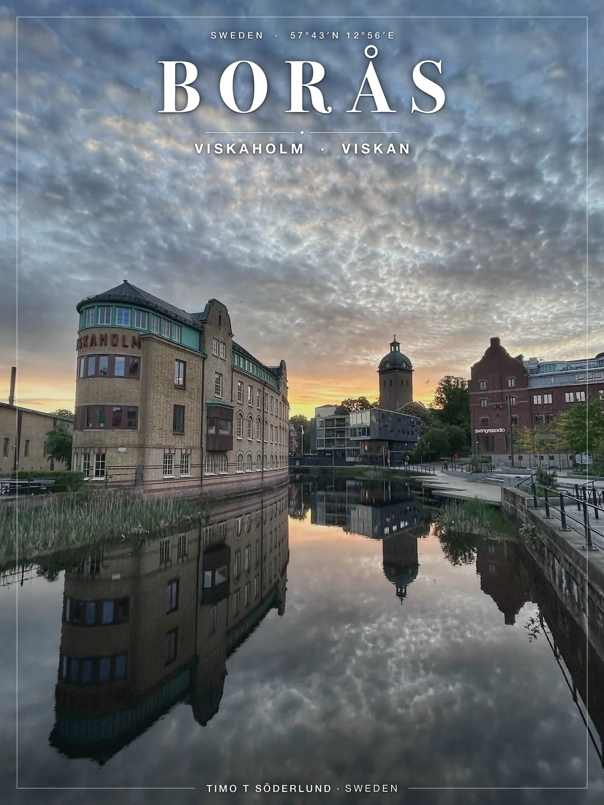

Viskaholm · Viskan (Sunrise)
Golden Sunrise & Historic Viskaholm · Central Borås, Sweden
English
Facing east beneath an extraordinary early-morning sky filled with soft, sweeping clouds, the curved yellow-brick facade of Viskaholm—designed by architect Lars Kellman in 1913 as the headquarters of Borås Wäfveri—stands proudly above the Viskan river in central Borås, Sweden. In the background, the spire of Caroli Church catches the golden dawn sunrise while ripples mirror the luminous morning sky. Photographed in serene dawn light by Timo T Söderlund for Borås Poster Project 2026 in Boras, Sweden.
Svenska
Med blicken riktad österut under en storslagen morgonhimmel fylld av fjäderlätta, mjukt böljande moln reser sig Viskaholms rundade tegelfasad — ritad 1913 av arkitekt Lars Kellman för Borås Wäfveri — stolt över Viskan i centrala Borås. I bakgrunden fångar Caroli kyrkas kyrktorn soluppgångens gyllene horisont medan hela vyn speglas i Viskans stilla vatten. Fotograferad i tidigt morgonljus av Timo T. Söderlund för Borås Poster Project 2026.
Photographer & Edition: Timo T Söderlund · Borås, Sweden (2026)